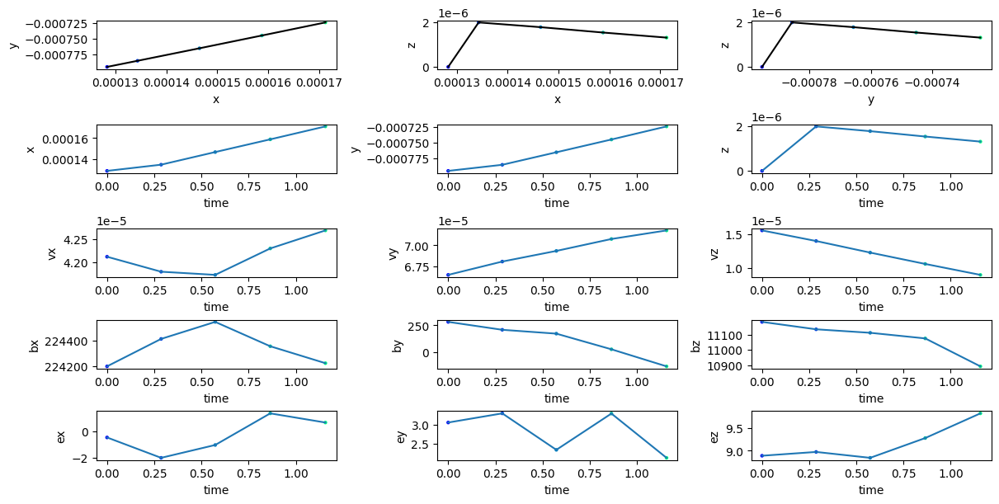
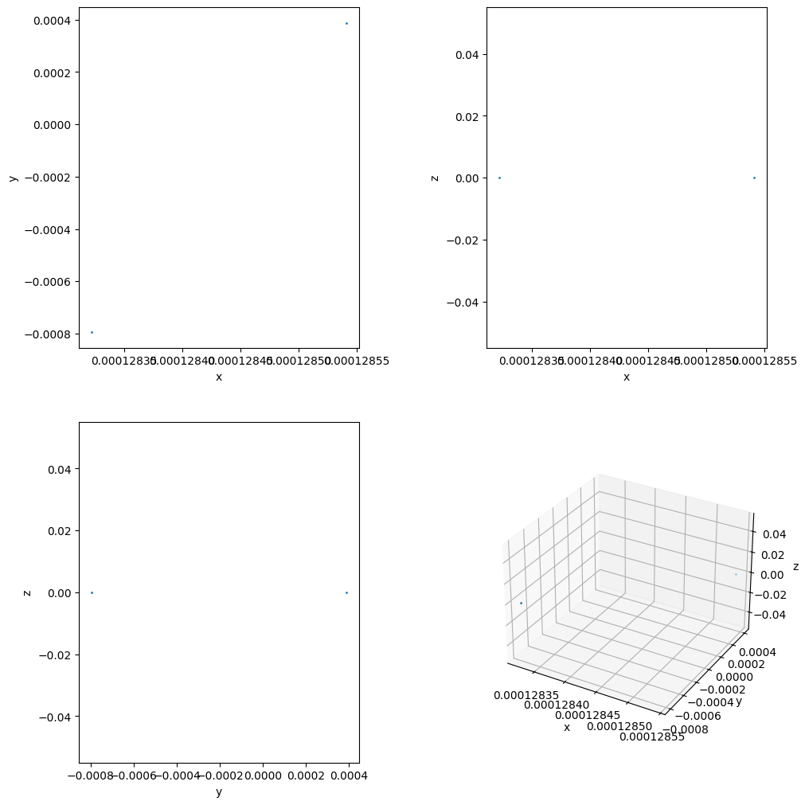
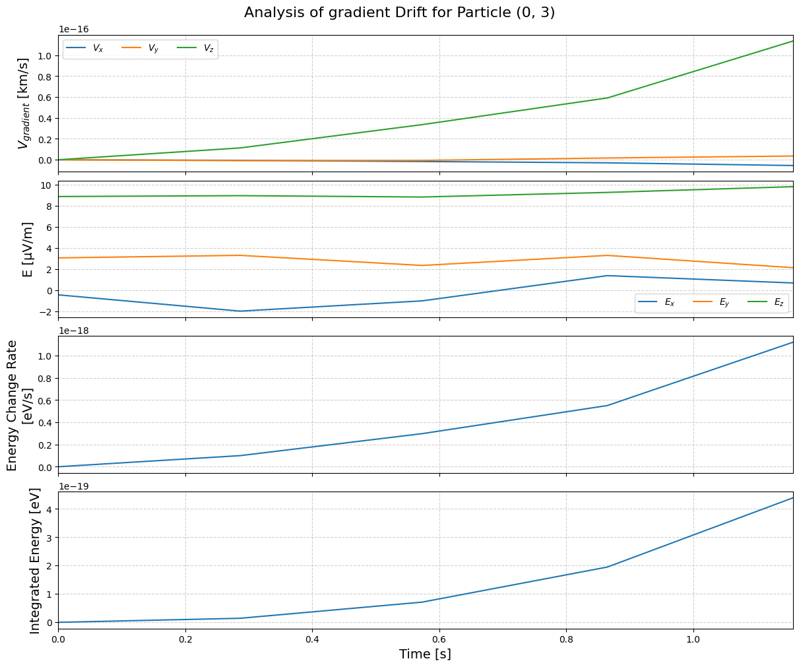
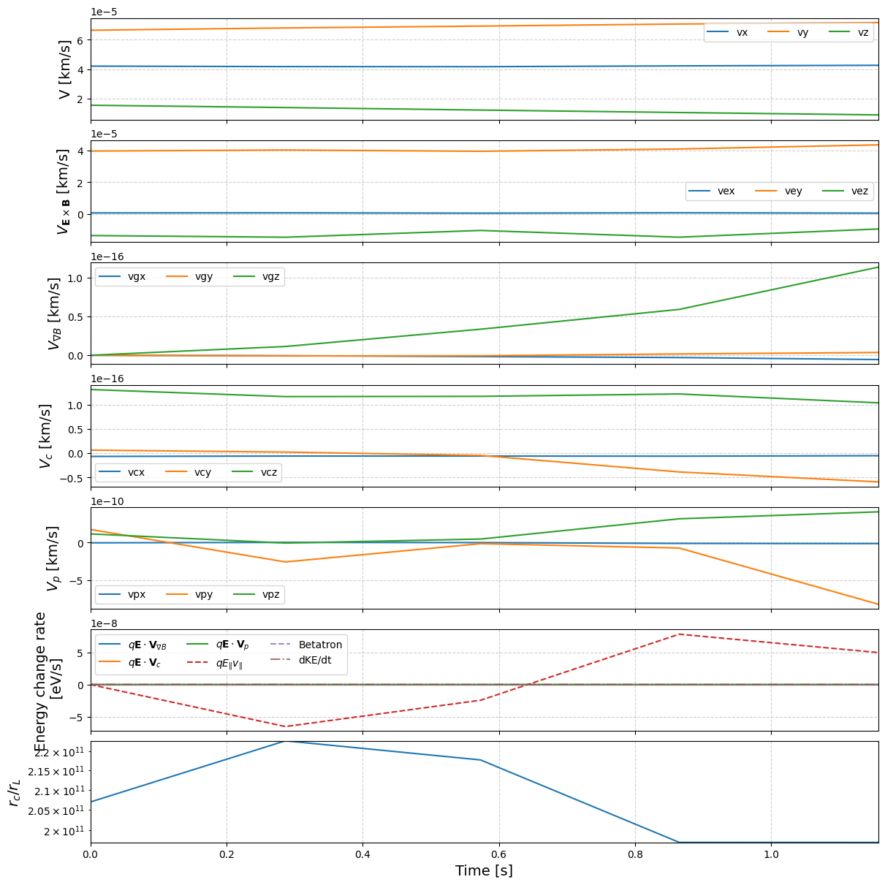
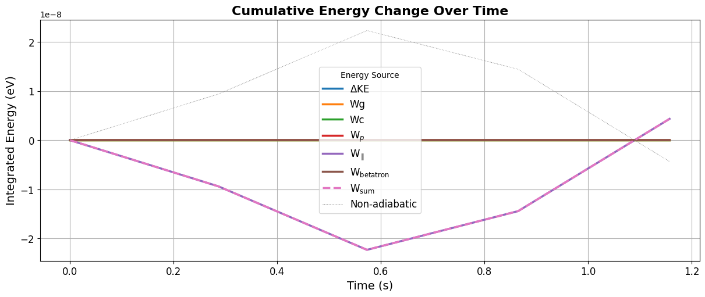

FLEKS Python Visualization Toolkit: Test Particle Data
flekspy is a Python package for processing FLEKS data. This notebook focuses on handling test particle data.
FLEKS data format
Field: *.out format or AMREX built-in format, whose directory name is assumed to end with “_amrex”
PIC particle: AMREX built-in format
Test particle: binary data format
Importing the package
import flekspy
Downloading demo data
Example test particle data can be downloaded as follows:
from flekspy.util import download_testfile
url = "https://raw.githubusercontent.com/henry2004y/batsrus_data/master/test_particles_PBEG.tar.gz"
download_testfile(url, "data")
Plotting Test Particle Trajectories
Loading particle data
from flekspy import FLEKSTP
tp = FLEKSTP("data/test_particles_PBEG", iSpecies=1)
Obtaining particle IDs
Test particle IDs consists of a CPU index and a particle index attached to the CPU.
tp.getIDs()
[(0, 3), (0, 4)]
Reading particle trajectory
tp[0].collect()
| time | x | y | z | vx | vy | vz | bx | by | bz | ex | ey | ez | dbxdx | dbxdy | dbxdz | dbydx | dbydy | dbydz | dbzdx | dbzdy | dbzdz |
|---|---|---|---|---|---|---|---|---|---|---|---|---|---|---|---|---|---|---|---|---|---|
| f32 | f32 | f32 | f32 | f32 | f32 | f32 | f32 | f32 | f32 | f32 | f32 | f32 | f32 | f32 | f32 | f32 | f32 | f32 | f32 | f32 | f32 |
| 0.0 | 0.000128 | -0.000795 | 0.0 | 0.000042 | 0.000067 | 0.000016 | 224199.65625 | 281.65274 | 11182.642578 | -0.447306 | 3.064687 | 8.890797 | 0.0 | 0.0 | 0.0 | 2.1949e6 | 0.0 | 0.0 | -107828.21875 | 0.0 | 0.0 |
| 0.286543 | 0.000134 | -0.000786 | 0.000002 | 0.000042 | 0.000068 | 0.000014 | 224414.28125 | 207.771286 | 11134.431641 | -1.991942 | 3.305334 | 8.97459 | -225897.34375 | 123607.867188 | 0.0 | 1.993212e6 | 110127.578125 | 0.0 | -52048.246094 | 458591.0 | 0.0 |
| 0.573086 | 0.000146 | -0.000766 | 0.000002 | 0.000042 | 0.000069 | 0.000012 | 224547.4375 | 171.823151 | 11111.666016 | -1.018998 | 2.346379 | 8.844476 | -159384.8125 | 358307.84375 | 0.0 | 2.0199e6 | 25620.753906 | 0.0 | 68019.898438 | 1.3220e6 | 0.0 |
| 0.864857 | 0.000159 | -0.000745 | 0.000002 | 0.000042 | 0.000071 | 0.000011 | 224356.78125 | 25.654217 | 11075.149414 | 1.378713 | 3.30056 | 9.281602 | 385832.53125 | 685539.1875 | 0.0 | 2.0586e6 | -450143.34375 | 0.0 | 668866.25 | 693783.875 | 0.0 |
| 1.157084 | 0.000171 | -0.000724 | 0.000001 | 0.000043 | 0.000072 | 0.000009 | 224224.421875 | -133.657379 | 10893.328125 | 0.683855 | 2.13601 | 9.826899 | 822001.0 | 1.3780e6 | 0.0 | 1.7280e6 | -886848.8125 | 0.0 | 1.0217e6 | -653294.8125 | 0.0 |
Getting initial location
x = tp.read_initial_condition(tp.getIDs()[0])
print("time, X, Y, Z, Vx, Vy, Vz")
print(
f"{x[0]:.2e}, {x[1]:.2e}, {x[2]:.2e}, {x[3]:.2e}, {x[4]:.2e}, {x[5]:.2e}, {x[6]:.2e}"
)
time, X, Y, Z, Vx, Vy, Vz
0.00e+00, 1.28e-04, -7.95e-04, 0.00e+00, 4.21e-05, 6.65e-05, 1.55e-05
Interpolate particles trajectory at selected times
from flekspy.tp import interpolate_at_times
interpolate_at_times(tp[0], [1.0])
| time | x | y | z | vx | vy | vz | bx | by | bz | ex | ey | ez | dbxdx | dbxdy | dbxdz | dbydx | dbydy | dbydz | dbzdx | dbzdy | dbzdz |
|---|---|---|---|---|---|---|---|---|---|---|---|---|---|---|---|---|---|---|---|---|---|
| f32 | f32 | f32 | f32 | f32 | f32 | f32 | f32 | f32 | f32 | f32 | f32 | f32 | f32 | f32 | f32 | f32 | f32 | f32 | f32 | f32 | f32 |
| 1.0 | 0.000165 | -0.000736 | 0.000001 | 0.000042 | 0.000071 | 0.00001 | 224295.5625 | -48.021412 | 10991.063477 | 1.057367 | 2.761999 | 9.533781 | 587544.0625 | 1.0058e6 | 0.0 | 1.90571e6 | -652103.1875 | 0.0 | 832021.6875 | 70810.625 | 0.0 |
Plotting trajectory
import matplotlib.pyplot as plt
tp.plot_trajectory(tp.getIDs()[0])
plt.show()

Reading and visualizing all particle’s location at a given snapshot
ids, pData = tp.read_particles_at_time(0.0, doSave=False)
tp.plot_location(pData)
plt.show()

Selecting particles starting in a region
from flekspy.tp import Indices
def f_select(tp, pid):
pData = tp.read_initial_condition(pid)
inRegion = pData[Indices.X] > 0 and pData[Indices.Y] > 0
return inRegion
pSelected = tp.select_particles(f_select)
Saving trajectories to CSV
tp.save_trajectory_to_csv(tp.getIDs()[0])
Calculating drifts
With the $\mathbf{E}, \mathbf{B}$, and $\nabla \mathbf{B}$ saved along the trajectory, we can compute various drifts:
Convection drift velocity:
tp.get_ExB_drift(pid)Curvature drift velocity:
tp.get_curvature_drift(pid)Gradient drift velocity:
tp.get_gradient_drift(pid)Polarization drift velocity:
tp.get_polarization_drift(pid)
The first adiabatic assumption can be checked by comparing the ratio between the curvature length and the gyroradius $r_c / r_L$ via get_adiabaticity_parameter. If $r_c / r_L \gg 1$, then the gyromotion can be savely ignored.
The Betatron acceleration $\mu \partial B/\partial t$ can be indirectly computed with the knowledge of total derivative $\mathrm{d}B/\mathrm{d}t$ and $\mathbf{v}\nabla B$ along the trajectory:
pid = tp.getIDs()[0]
pt = tp[pid]
mu = tp.get_first_adiabatic_invariant(pt)
pt = tp.get_betatron_acceleration(pt, mu)
To analyze a specific drift:
tp.analyze_drift(pid, "gradient")

By combining all these together, we come up with time series of various terms:
tp.analyze_drifts(pid)

We can the track the energy change from drift and EM field variations:
from flekspy.tp import plot_integrated_energy
df = tp.integrate_drift_accelerations(tp.getIDs()[0])
plot_integrated_energy(df)

Alternatively, the energy change can be decomposed into three terms: the parallel acceleration, Betatron acceleration, and the Fermi acceleration:
df = tp.get_energy_change_guiding_center(tp.getIDs()[0])
df
| time | dW_parallel | dW_betatron | dW_fermi | dW_total |
|---|---|---|---|---|
| f32 | f32 | f32 | f32 | f32 |
| 0.0 | -1.2793e-15 | 7.9045e-14 | 1.1878e-18 | 7.7767e-14 |
| 0.286543 | -6.5532e-8 | 6.6485e-14 | 1.0648e-18 | -6.5532e-8 |
| 0.573086 | -2.4509e-8 | -1.0753e-14 | 1.0303e-18 | -2.4509e-8 |
| 0.864857 | 7.8494e-8 | -6.7355e-14 | 9.9597e-19 | 7.8494e-8 |
| 1.157084 | 4.9847e-8 | -5.8379e-14 | 8.8976e-19 | 4.9847e-8 |